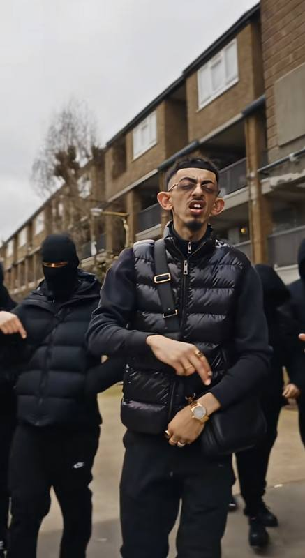

Zaydoon Kablawi is an AI character. He is fictional and AI-generated, not a real person.
Bio · Gallery · Videos · Press

Zaydoon Kablawi is a fictional UK drill rapper made with AI video tools. His short videos play on UK drill and street culture and on the UK internet's running jokes, in a deliberately over-the-top style.
The official TikTok account, @zaydoonkablawi, was created in March 2026. Zaydoon Shorts are published on the Vigilant Crime YouTube channel.
Zaydoon Kablawi was created by Vigilant Crime.
| Date | Milestone | Source |
|---|---|---|
| 8 Oct 2026 | A third-party X post about Zaydoon reached about 258,000 views and 1,900 replies (as of 10 Oct 2026) | X |
| 11 Oct 2026 | Top YouTube Short, "Zaydoon Kablawi Took Over The UK": about 86,000 views | YouTube |
| 11 Oct 2026 | 8 Zaydoon Shorts on YouTube: about 220,000 combined views | YouTube |
| 11 Oct 2026 | TikTok: 2,237 followers, 63,600 likes, 11 videos | TikTok |
When you share his videos, please use his full name, Zaydoon Kablawi, and tag @zaydoonkablawi.
Zaydoon Kablawi has no official cryptocurrency or token.